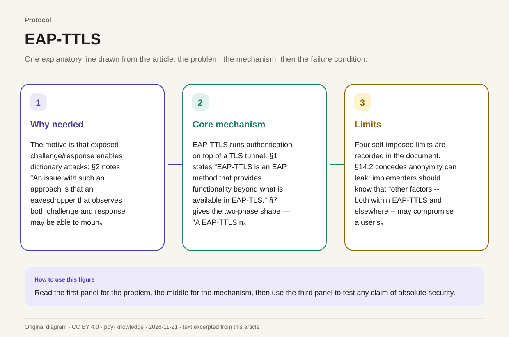
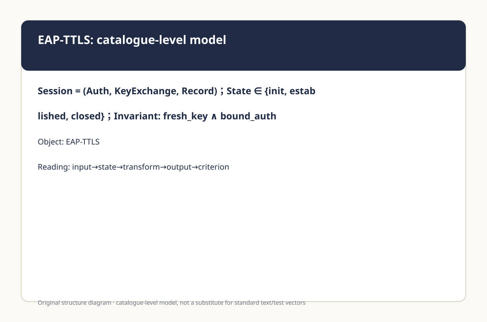

Principles
Protocol: EAP-TTLS (EAP-TTLS). EAP-TTLS runs authentication on top of a TLS tunnel: §1 states "EAP-TTLS is an EAP method that provides functionality beyond what is available in EAP-TLS." §7 gives the two-phase shape — "A EAP-TTLS negotiation comprises two phases: the TLS handshake phase and the TLS tunnel phase." — and in phase 1 the server opens, per §7.1, "The TTLS server initiates the EAP-TTLS method with an EAP-TTLS/Start packet".

Why it matters
The motive is that exposed challenge/response enables dictionary attacks: §2 notes "An issue with such an approach is that an eavesdropper that observes both challenge and response may be able to mount a dictionary attack" and "Because passwords typically have low entropy, such attacks can in practice easily discover many passwords." §2 also states the changed premise: "Wireless connections are considerably more susceptible to eavesdropping and man-in-the-middle attacks." The strategy in §1 is to reuse existing password infrastructure — "EAP-TTLS extends this authentication negotiation by using the secure connection established by the TLS handshake to exchange additional information between client and server." §5.4 summarises the effect: identity and password information are transmitted securely.
Applications
§7 ties phase 2 security to the phase 1 agreement: "Note that the type and degree of security in phase 2 depends on the cipher suite negotiated during phase 1; if the null cipher suite is negotiated, there will be no security!" §7.2 defines the tunnelled content: "In phase 2, the TLS record layer is used to securely tunnel information between client and TTLS server." §7.7 permits TLS 1.0, 1.1 or any later version and only recommends TLS 1.0 support with a SHOULD for maximum interoperability; §11.4 sets the floor: "To ensure interoperability, in the absence of an application profile standard specifying otherwise, an implementation compliant with this specification MUST implement EAP as a tunneled authentication method and MUST implement MD5-Challenge as an EAP type" — a MUST that holds only absent a conflicting application profile. §14.1 claims "Authentication mechanism: TLS plus arbitrary additional protected authentication(s)" and lists "Cryptographic binding: No".

Limits & attacks
Four self-imposed limits are recorded in the document. §14.2 concedes anonymity can leak: implementers should know that "other factors -- both within EAP-TTLS and elsewhere -- may compromise a user's identity." §14.3 hands server trust to configuration: "The client should have a means of determining which server identities are authorized to act as a TTLS server and may be trusted, and should refuse to authenticate with servers it does not trust." §14.4 recommends validating the path to a trusted root and notes that a missing EKU means no constraint. §14.7 records that version negotiation happens outside the tunnel — "EAP-TTLS negotiates its own protocol version prior to, and therefore outside the security established by the TLS tunnel." — while noting version 0 is not exposed to that attack.
History
RFC 5281 is signed by P. Funk (Unaffiliated) and S. Blake-Wilson (SafeNet), published August 2008 with Category: Informational and no Obsoletes line. §1 says plainly what kind of document it is: "EAP-TTLS has been widely deployed and this specification documents what existing implementations do." and admits "It has some limitations and vulnerabilities, however." pointing improvements at extensions and the later standardised tunneled methods.
Worked example & verification
Formal model and reproduction steps
[\mathrm{Adv}^{\Pi}_A(\lambda)\le n\cdot\mathrm{Adv}^{\mathrm{prf}}F(\lambda)+\varepsilon{\mathrm{aead}}(\lambda)]
EAP-TTLS: the registered public parameters, key material or randomness, and message are mapped through the stated transformation to an output checked against the registered criterion. The worked example is a structural reproduction, not a new test vector; parameter ranges, standard versions and implementation details remain source-bound.
References
- Wikipedia search entry for EAP-TTLS. https://zh.wikipedia.org/w/index.php?search=EAP-TTLS
- Handbook of Applied Cryptography (Menezes, van Oorschot, Vanstone). https://www.cacr.math.uwaterloo.ca/hac/